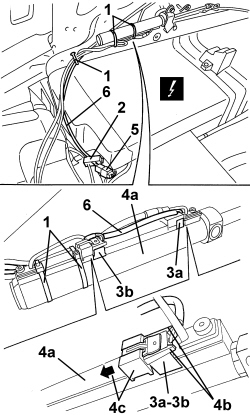

7030H71 HOOD COMPARTMENT COVER HYDRAULIC ACTUATOR SENSORS - R.R.
- Path
- Procedures > 70 FITTINGS > 7030 SUN ROOF/GLASS PANEL > 7030H AUTOMATICALLY OPERATED HOOD > 7030H71 HOOD COMPARTMENT COVER HYDRAULIC ACTUATOR SENSORS - R.R.
- Kind
- repair procedure (removal / refitting; the operation number is the code)
- Applies to
- engines: 2.2 JTS, 3.2 JTS; all production periods
- Interactive page
- https://sloeber94.github.io/elrnDB-aBrrSpdr/en/#/946004106
Applies to: engines: 2.2 JTS, 3.2 JTS; all production periods
 Removing
Removing
 Refitting
Refitting- Prepare the hood for the operation.
Op. 0010T79 HOOD HYDRAULIC SYSTEM - DISCHARGE AND RESTORE PRESSURE
Op. 7040C11 HOOD HOUSING COMPARTMENT FLOOR TRIM - R.R.
Op. 7040C13 HOOD HOUSING COMPARTMENT REAR TRIM - R.R.
Op. 7040C14 HOOD HOUSING COMPARTMENT SIDE TRIM (ONE), LEFT OR RIGHT - R.R.
1. Cut the retaining bands.
2. Open the retainer for the wiring and the pipes.
3. Mark the reciprocal position of the sensors (3a) and (3b).
4. Move the sensors (3a) and (3b) from the hydraulic actuator (4a) after having released the tabs (4b) and slide the retainers (4c).
5. Disconnect the electrical connection for the sensors.
Description | Component |
|---|---|
HOOD COVER POSITION SENSOR |
6. Keep the sensor unit and wiring.

Applies to: engines: 2.2 JTS, 3.2 JTS; all production periods
Refitting
Removing- Check that the sensor assembly is not damaged.
- Fit the sensors in place on the actuator in the correct reciprocal position, then secure them using the retainers; attach the tabs.
- Fit the wiring and pipe retaining bands.
Op. 7040C14 HOOD HOUSING COMPARTMENT SIDE TRIM (ONE), LEFT OR RIGHT - R.R.
Op. 7040C13 HOOD HOUSING COMPARTMENT REAR TRIM - R.R.
Op. 7040C11 HOOD HOUSING COMPARTMENT FLOOR TRIM - R.R.
- If discharged, restore the hood hydraulic system pressure.
Op. 7030H03 HOOD MANUAL OPENING FOLLOWING DEACTIVATION OF HYDRAULIC SYSTEM - CARRY OUT PROCEDURE
- Check that the hood is working correctly.
Topics linked from this page (6)
- 0010T79 HOOD HYDRAULIC SYSTEM - DISCHARGE AND RESTORE PRESSURE
- 7030H03 HOOD MANUAL OPENING FOLLOWING DEACTIVATION OF HYDRAULIC SYSTEM - CARRY OUT PROCEDURE
- 7040C11 HOOD HOUSING COMPARTMENT FLOOR TRIM - R.R.
- 7040C13 HOOD HOUSING COMPARTMENT REAR TRIM - R.R.
- 7040C14 HOOD HOUSING COMPARTMENT SIDE TRIM (ONE), LEFT OR RIGHT - R.R.
- K203 HOOD COVER POSITION SENSOR